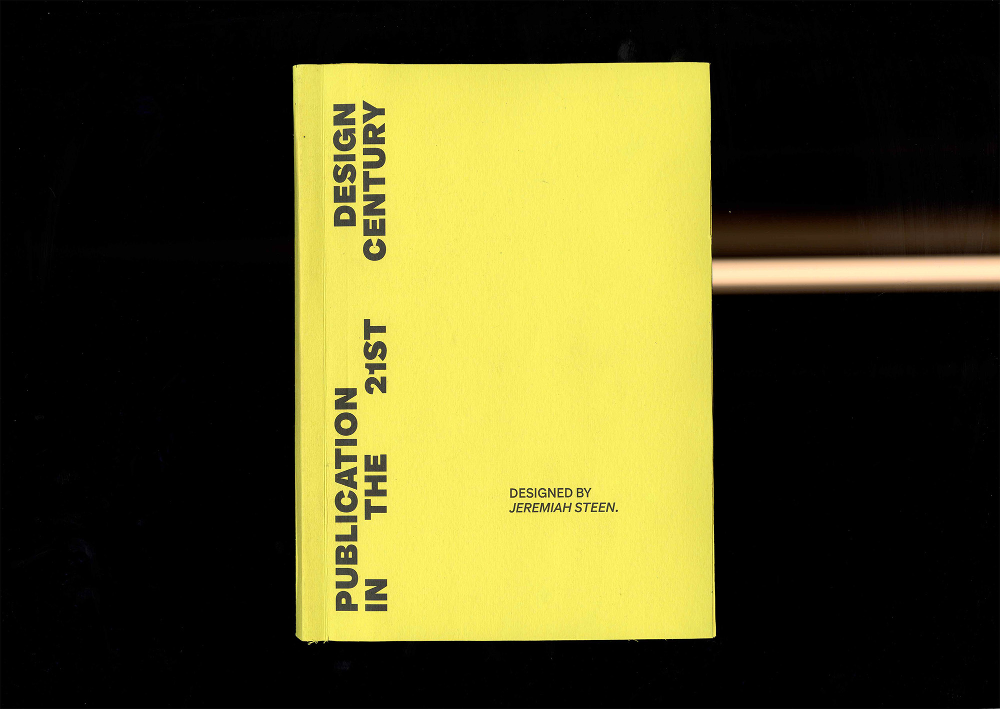

Publication Design in the 21st Century is a publication produced while studying at RMIT that focuses on the history, theory, and craft of publishing in today’s world. It is a collection of relevant writing all surrounding the world of publication.
Brief.
I was assigned to create a publication with a minimum of 8 texts provided by RMIT and create a cohesive publication base around these works, considering the whole reading experience, including the reader, editorial idea and tone, format, macro and micro typographies, illustration style and content.
Response.
For the body copy, I wanted to utilise a major-minor grid. I developed a few different styles but settled on a 6-column grid with type occupying the right 4 columns and headings taking up the 2 left columns, as I found this spacing balanced nicely on the paper and allowed for a balanced typographic contrast between the two styles. This grid system also allowed for a 2-column approach on the images, allowing for symmetrical imagery to contrast the asymmetrical type.
For the body typeface, I ended up selecting Armin Grotesque, based on the works of Swiss-style designer Armin Hofmann. This typeface is designed in a gid-centric style of the neo-grotesque typeface, it has plenty of weights and italics, with a tall x-height allowing for strong readability and legibility at small point sizes.
Inspired by the Swiss typographic style, I wanted the type to be small but feel weighty/impactful. I ended up going with semibold at 9.3pts with the baseline turned on, the type justified and hyphenated when the word is longer than 7 characters. This style looks visually satisfying on the page and feels easy to read. The leading is far enough away to allow for a heavier weight without making the type blend together at the top and bottom.
The footnotes utilise the 6-column grid system and are sized to be one-third of the body copy at ultra-light weight 2pts smaller, which visually balances nicely with the body and doesn’t distract from it.
For the Chapter and paragraph heading, I wanted to pair a different sans-serif typeface with a more visually distinct style to create a strong contrast to the page and allow for a subconscious, clear distinction between the two styles. This led to me NN Pivot Grotesque, on the key principles of this typeface are the radial lines seen in timekeeping and visualisations of walking. This reflects the movement between new publications, creating a visual sense of movement that tells the user they’ve moved to a new piece of writing. To reinforce this idea, I gave the book headings their own page, which changes how the grid is utilised, creating a visually distinct page.
I only used yellow as an accent colour as I wanted to reference the Swiss style of using one colour and black. This was a personal decision of how I love how black and yellow contrast with each other and stand out on a shelf when presented next to other publications.
Services.
Publication
Photography